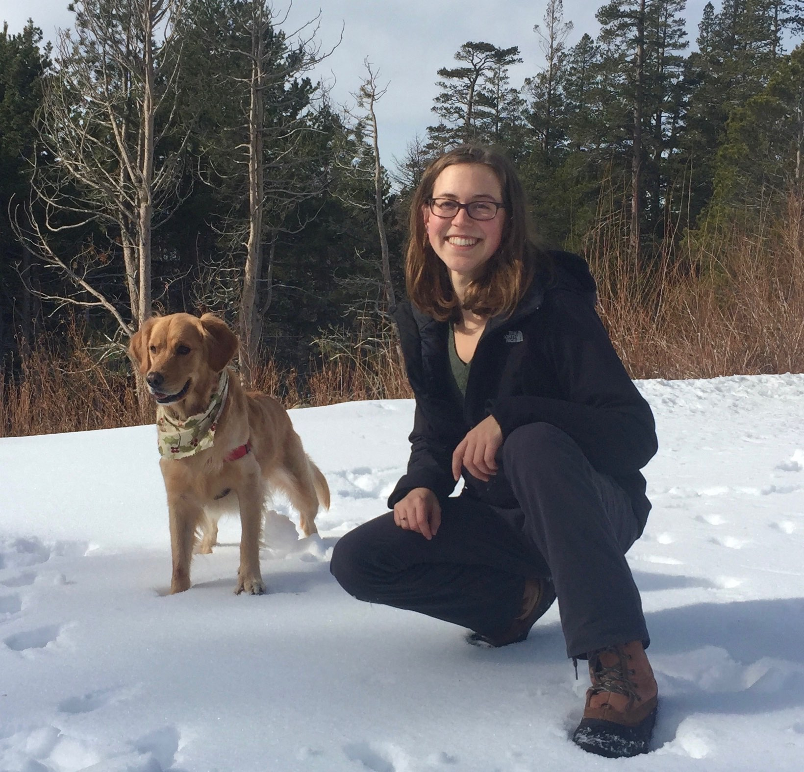

Hello!

I’m a PhD student at UC Davis in the Graduate Group in Ecology, working with Dr. Yufang Jin and Dr. Hugh Safford . I study forest and fire ecology across landscapes, and am interested in working with people to move forward into a healthier relationship with fire. My background is in field ecology with a focus on restoration and land management strategies across many contexts: the National Park Service at Point Reyes National Seashore and Lava Beds National Monument, diversified farming systems and pollinator restoration, high elevation forest fire across the National Parks and National Forest System in the Sierra Nevada, and community-led prescribed fire training in Sonoma County.
I believe it is important to expand outreach and communication to the public about fire and forest systems in California. Beyond that, I believe for our collective societal relationship with fire to improve, we must focus on empowering communities and developing programs that meet their needs where they are. An essential part of this is facilitating cultural burning led by Indigenous fire practitioners. I have been fortunate to attend cultural burns led by Honorable Chairman Ron Goode and am committed to improving conditions for Indigenous fire practitioners in my work after graduate school. I also am fireline trained as an FFT2 and attended a TREX program in 2020 led by Fire Forward in Sonoma County. Community-led and participatory programs like that are an amazing way to spread the word - when a friend, neighbor, or family member participates in a burn, that spreads the news about good fire.

My research is in high elevation forests of the Sierra Nevada, which capture and protect the majority of California’s water and contain a third of the state’s forest carbon. They face threats from increasing temperatures, changes in snowpack, and increasing fire and insect mortality. My goals are to develop better carbon mapping of high elevation forests and to study changes in forest structure and delayed mortality post fire. I want my science to be useful and relevant, so I believe it’s important to translate all my findings into research briefs or tools for easy access by land managers and policy makers.

Here I am looking stoked with a beautiful red fir cone in one of our plots. They’re hard to find because they’re delicious to animals and are usually eaten pretty quickly! Along with being a teaching assistant for geospatial classes (Intro to GIS and Environmental Remote Sensing), I have also been a TA for plant identification classes where I lead students around campus looking at trees and plants of the urban forest and arboretum. I particularly love leading outdoor labs and sharing my love for plants with students.